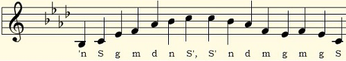
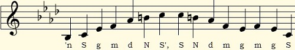
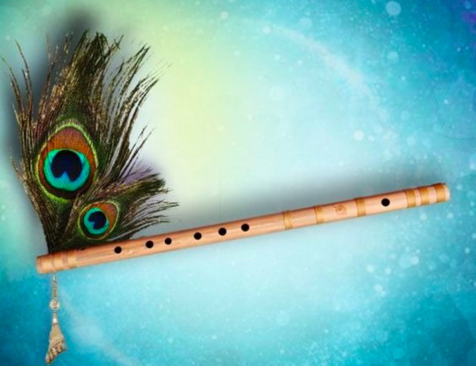

Raga Families (raagang)
~Introducing serious ragas~
This page explores the concept of raga families through some of the weightier ragas in Indian classical music – Malkauns, Darbari Kanada, Miya Malhar, and their offshoots – Chandrakauns, Sampoorna Malkauns, Kaunsi Kanada, and Megh.
Raga families (raagang) are created when new ragas are derived from existing ragas. Take an existing raga and leave out one note from its scale, and you have a new raga. Add a new note, and you have a different raga. You can also leave out or add notes selectively, say just in the ascending scale of the raga or only in specific note patterns. The melody profiles or chalan of ragas in the same family are often similar.
Take Raag Malkauns, for instance. It uses the notes Sa ga ma dha ni (1, ♭3, 4, ♭6, ♭7). If you substitute Ni for ni, you get Raag Chandrakauns (Sa ga ma dha Ni; 1, ♭3, 4, ♭6, 7). If you take Malkauns and add two notes to it, Re and Pa, you get Raag Sampoorna Malkauns (Sa Re ga ma Pa dha ni; 1, 2, ♭3, 4, 5, ♭6, ♭7). All three ragas belong to the Kauns family and use similar patterning of notes. Meanwhile, Raag Darbari Kanada uses the same set of notes as Sampoorna Malkauns (Sa Re ga ma Pa dha ni; 1, 2, ♭3, 4, 5, ♭6, ♭7), but its melody profile is different because it has a different origin. It belongs to the Kanada family. Let's take a look at the progression from one raga to another to see how this works in practice.
Raag Malkauns (Kauns ang)
Malkauns is an ancient raga and a very important one in both Hindustani (North Indian) and Carnatic (South Indian) classical music. It is vast and profound, best performed in the lower pitch ranges at an extremely contemplative pace in the small hours of the morning, just after midnight.

Raag Chandrakauns (Kauns ang)
Despite using so many flat notes, there is no darkness in Malkauns because of the even spacing of its notes. But replace the flat ni (♭7) with Ni (7), and you immediately add an element of tension and darkness to the scale. Chandrakauns is a new raga, created from Malkauns. Similar to Malkauns, it is performed after midnight.

Let us meet agin in another lesson, Till then Happy Fluting!!
